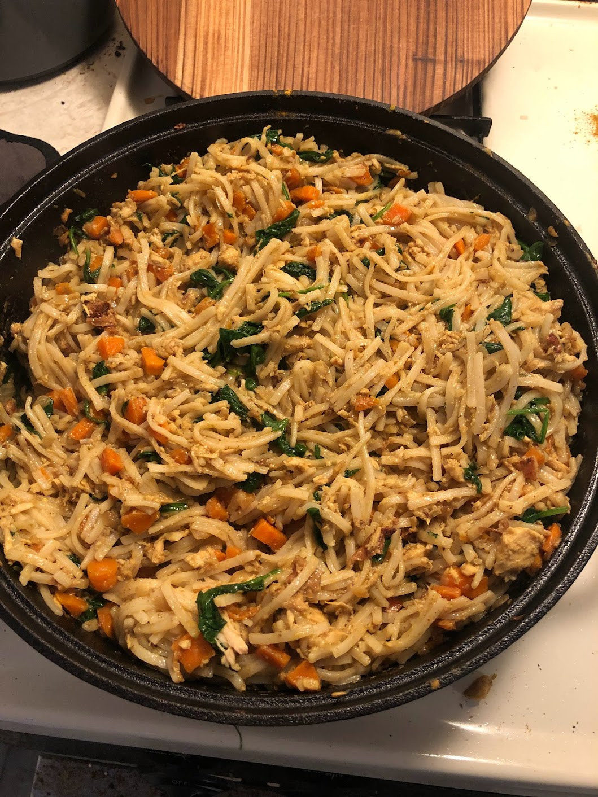

Back to Main

Description
Curry and Noodles
Ingrediants
- Onion 1 cup
- Garlic 2 cloves
- Spinach 2 cups
- Carrots 2
- Salt and Pepper to taste
- Oil 2 Tbps
- Noodles
- Coconut Milk 1 can
- Curry Powder 2 tbsp
- Water
- Ginger
- Cilantro
- Lime
Steps
- Cut onion in half and cut each half into thin slices. Do the same thing with carrots
- Mine garlic
- Heat oil in pot or pan
- Add onions until soften then add carrots for 3 minutes
- Add garlic and curry powder
- Add a can of coconut milk and instant noodles
- Simmer and cover for 10 minutes until fragrant and tender
- Add toppings